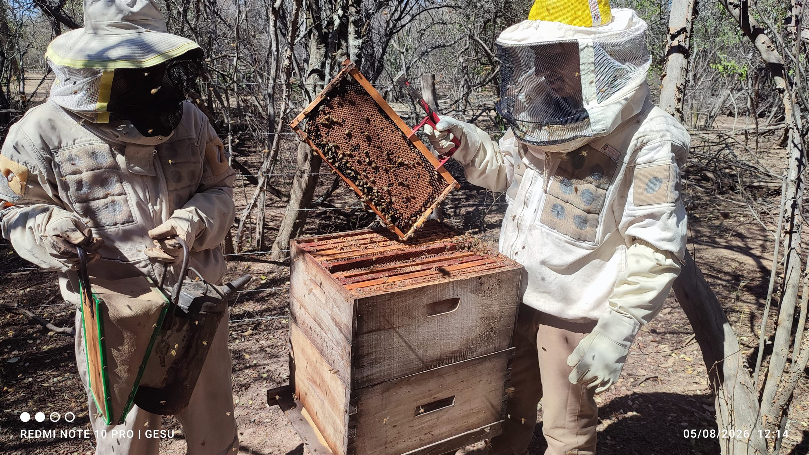
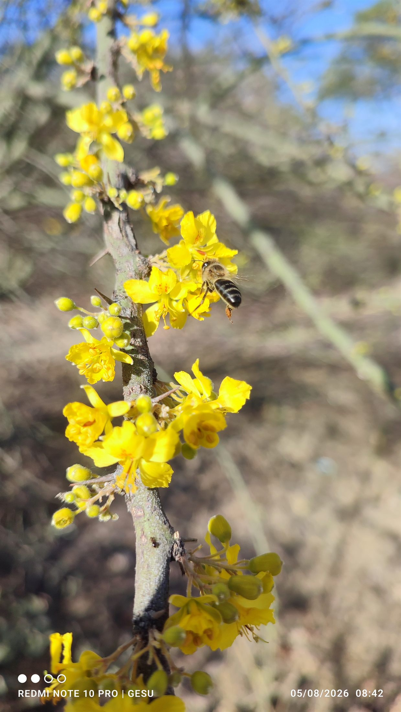
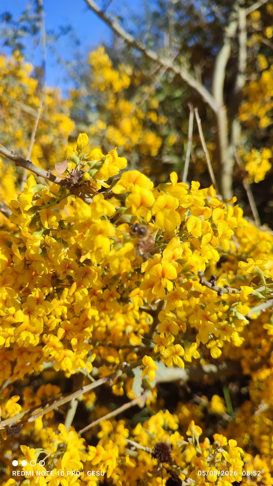

Apartado 02 · Línea productiva
Apicultura
La biodiversidad tiene un valor económico medible. Las abejas producen miel en la medida en que el bosque florece.
El polinizador
El insecto que sostiene la vida.
Las abejas sustentan la biodiversidad y, a la vez, producen miel: nos ayudan nutricional y económicamente en nuestro medio de vida. Cuidar a los polinizadores es apoyar al insecto más importante del planeta —el que garantiza, con su trabajo silencioso, nuestra propia vida.



Cuando el monte es la base de la vida, la cultura y la economía, cuidar a las abejas deja de ser un gesto ambiental para volverse una forma de sostener el propio bienestar.
En el territorio
Seis centros que muestran el modelo.
Los centros apícolas del Modelo de Conservación Productiva están georreferenciados: se pueden ubicar y recorrer en el geoportal, junto a los predios ganaderos, la Red de artesanas y los puntos de turismo comunitario. Son espacios vivos donde las comunidades muestran, en la práctica, que producir miel y cuidar el bosque son parte de lo mismo.
Centros apícolas del Modelo de Conservación Productiva, georreferenciados en el geoportal.
Una comunidad consciente del valor de la biodiversidad: la VIDA.
Cuidar y producir en el monte se traduce en equilibrio: eso garantiza la sostenibilidad del medio de vida.
En el mapa
Los centros apícolas, georreferenciados.
Ubicá en el geoportal los seis centros apícolas, junto a los predios ganaderos, la Red de artesanas Alma de Monte y los puntos de turismo comunitario.